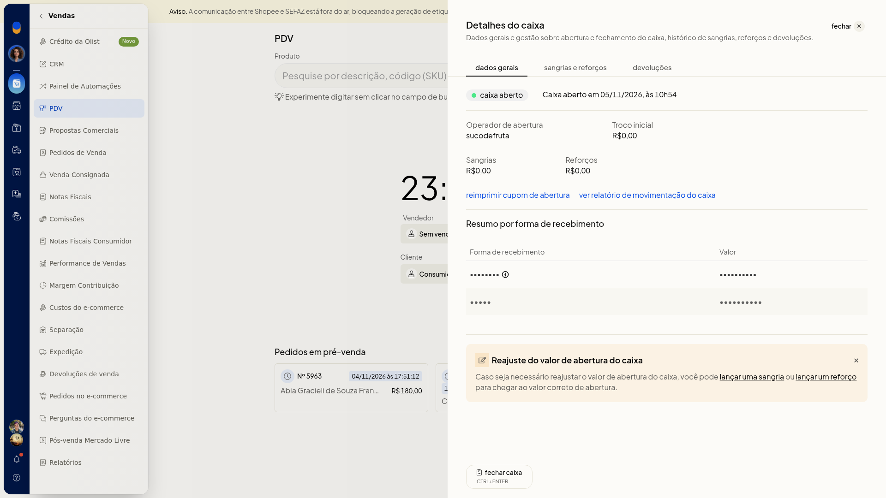
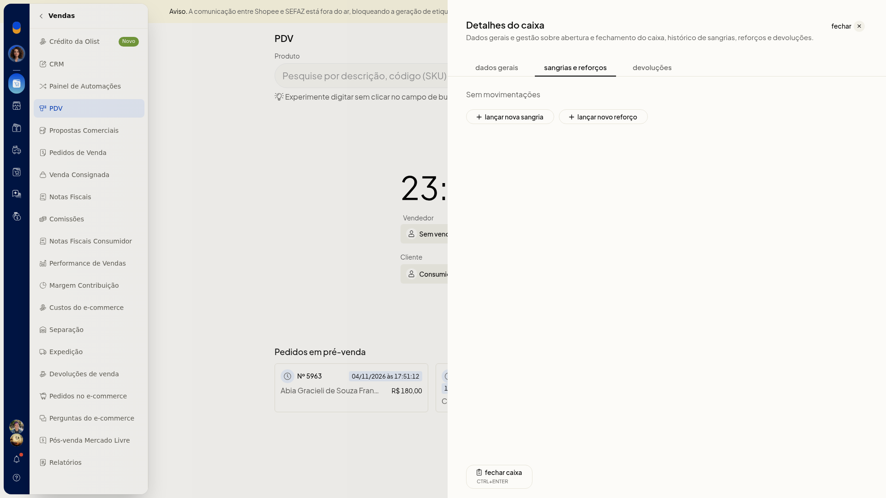
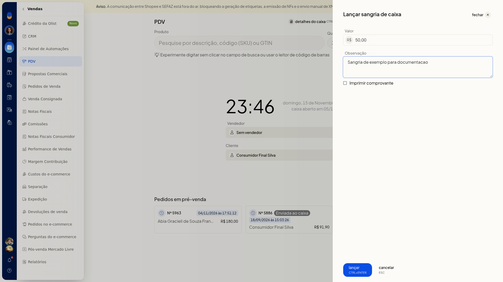
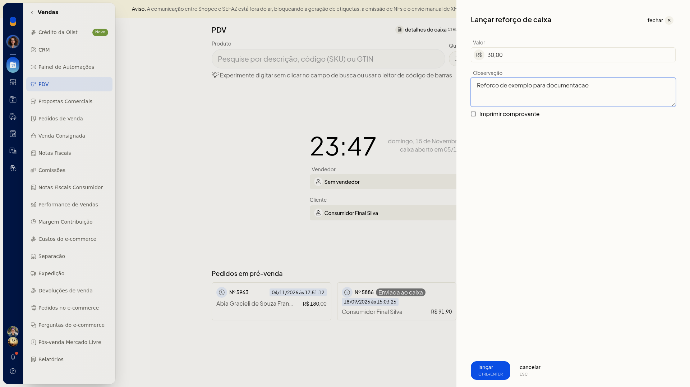
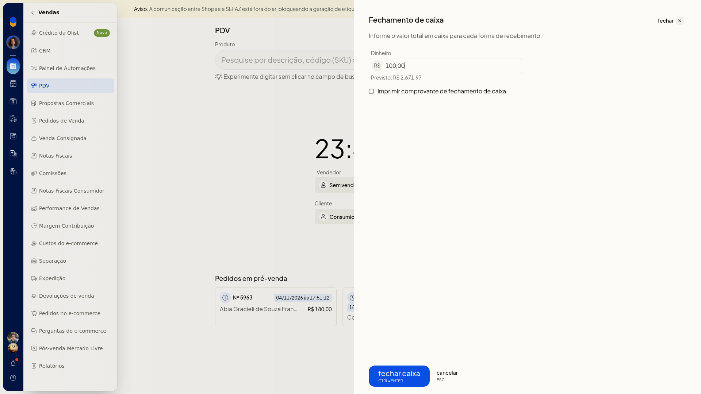

PDV: abrir, movimentar e fechar o caixa
Pré-requisitos
- Sangria, reforço e fechamento de caixa exigem o módulo de controle de caixa do PDV. Sem esse módulo, as opções ficam bloqueadas e o sistema pede upgrade de plano.
Importante
- Cancelar a sangria, o reforço ou o fechamento antes de concluir não altera o caixa.
Instruções
-
Acesse Vendas > PDV.

-
Clique em Mais ações. Ali estão Detalhes do caixa, Lançar sangria de caixa, Lançar reforço de caixa e Fechar caixa.

-
Clique em Detalhes do caixa ou use CTRL+Y. Confira o operador, o troco inicial, as sangrias, os reforços e desde quando o caixa está aberto.

-
Abra a lista de sangrias para ver os lançamentos. A lista pode estar vazia.

-
Clique em Lançar sangria de caixa e informe o valor em reais.

-
Clique em Lançar reforço de caixa e informe o valor em reais.

-
Clique em Fechar caixa. Confira Dinheiro Previsto, informe o valor contado e marque Imprimir se quiser imprimir. O caixa só muda depois que você conclui o fechamento.

Resultado
Em Detalhes do caixa você confere o movimento do caixa aberto, com operador, troco inicial, sangrias e reforços. Sangria, reforço e fechamento ficam preenchidos até você concluir ou cancelar.